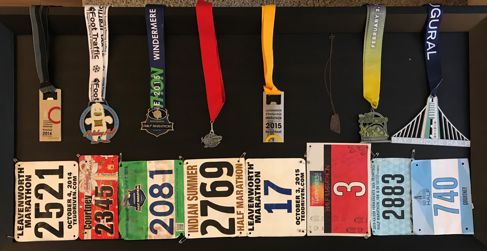

I have run seven half marathons and one full marathon. The photo below shows all the medals and bibs I received from these races. The snapshots below highlight notable or otherwise fun races I have run on the West Coast.

Holiday Half
Portland, OR - December 14, 2014
The Holiday Half in Portland, OR, was my second half marathon. The theme was Rudolph the Red-Nosed Reindeer, the claymation holiday movie. People dressed up as all the misfit toys, and the medal (shown) was the abominable snowman. I was coming back from Achilles tendinitis and this race was freezing, but I still somehow finished in about two hours and 20 minutes.
View race websiteLeavenworth Full Marathon
Leavenworth, WA - October 3, 2015
This was my full marathon. It took place in Leavenworth, WA, a small town in central Washington modeled after a Bavarian village. As such, a big Oktoberfest takes place every October, and there is a marathon & half marathon race on the first Saturday of the festival. In 2014, I ran the half, and in 2015, I braved the full marathon. I finished in five hours and seven minutes and sustained a stress fracture in my left foot. The medal is a bottle opener (look below where the yellow ribbon connects to the medal).
View race websiteBay Bridge Half
Oakland, CA - May 5, 2019
The Bay Bridge half marathon is the most recent race I have run. I finished in two hours and 37 minutes. The race course started in downtown Oakland at the Old Kan Brewery and went across the Oakland side of the Bay Bridge, turning around at Yerba Buena Island and heading back to the brewery. The highlight: a custom-brewed beer by Old Kan specifically for Bay Bridge Half runners named Liquid Medal.
View race website